Die Kontraktliste, welche über den Menüpunkt…
1 WinLine FAKT
1 Erfassen
1 Kontraktverwaltung
1 Kontraktliste
… aufgerufen werden kann, zeigt die laufenden Kontrakte und den Grad der Erfüllung an. Zusätzlich kann über die Tabellenausgabe der Kontraktstatus direkt editiert werden.
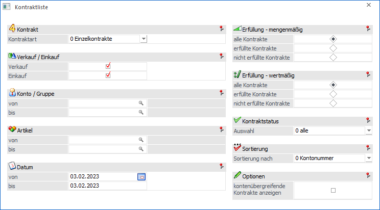
Folgende Einstellungen und Selektionsmöglichkeiten stehen für die Ausgabe der Kontraktliste zur Verfügung:
Kontrakt
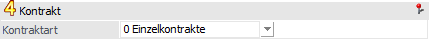
Ø Kontraktart
Aus der Auswahlliste kann gewählt werden, ob "0 - Einzelkontrakte" oder "1 - Gruppenkontrakte" ausgegeben werden sollen.
Verkauf / Einkauf
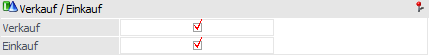
Ø Verkauf
Durch Aktivierung dieser Option werden Kontrakte aus dem Bereich "Verkauf" auf der Kontraktliste ausgegeben.
Ø Einkauf
Durch Aktivierung dieser Option werden Kontrakte aus dem Bereich "Einkauf" auf der Kontraktliste ausgegeben.
Konto / Gruppe
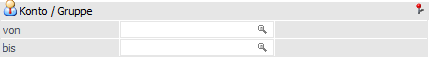
Ø Konto von / bis bzw. Gruppe von / bis
Gemäß der Einstellung "Kontraktart" kann an dieser Stelle eine Eingrenzung auf die Konten bzw. Gruppen erfolgen, für welche eine Kontraktliste ausgegeben werden sollen.
Artikel
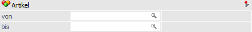
Ø Artikel von / bis
An dieser Stelle kann eine Einschränkung auf die Artikel erfolgen, welche auf der Liste ausgegeben werden sollen.
Datum
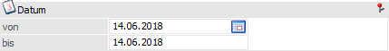
Ø Datum
Hier kann eine Selektion aufgrund des Kontraktdatums erfolgen (wird mit dem Tagesdatum vorbelegt). D.h. es werden alle Kontraktartikel bei der Ausgabe berücksichtigt, deren Gültigkeit in dem angegebenen Zeitraum liegt.
Erfüllung - mengenmäßig
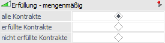
Ø Erfüllung - mengenmäßig - alle Kontrakte / erfüllte Kontrakte / nicht erfüllte Kontrakte
Gemäß dieser Einstellung werden jene Kontraktzeilen ausgegeben, bei denen die vereinbarte Menge erfüllt, nicht erfüllt oder die Erfüllung irrelevant ist.
Hinweis
Als "Erfüllungsmenge" wird jene Menge herangezogen, welche in den FAKT-Parametern (WinLine START - Parameter - Applikations-Parameter - FAKT-Parameter - Belege - Kontrakte - "Kontrakt ist erfüllt beim Erreichen der…") angegeben wurde. Möglich sind hierbei "bestellte Menge", "gelieferte Menge" und "fakturierte Menge".
Erfüllung - wertmäßig
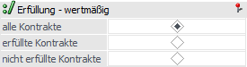
Ø Erfüllung - wertmäßig - alle Kontrakte / erfüllte Kontrakte / nicht erfüllte Kontrakte
Gemäß dieser Einstellung werden jene Kontraktzeilen ausgegeben, bei denen der vereinbarte Wert erfüllt, nicht erfüllt oder die Erfüllung irrelevant ist.
Hinweis
Der "Erfüllungswert" bildet sich immer aus den bereits erfassten Fakturen.
Kontraktstatus
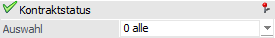
Ø Auswahl
Neben der mengenmäßigen Erfüllung des Kontrakts können Kontraktzeilen auch manuell abgeschlossen werden. An dieser Stelle kann eine entsprechende Selektion vorgenommen werden.
ü 0 - alle
Es werden alle
Kontraktzeilen, unabhängig vom Status, ausgeben.
ü 1 - nicht abgeschlossen
Es
werden alle Kontraktzeilen ausgegeben, welche noch nicht (manuelle bzw.
automatisch) abgeschlossen wurden.
ü 2 - manuell abgeschlossen
Mit
Hilfe dieser Auswahl werden all jene Kontraktzeilen ausgegeben, welche manuell
abgeschlossen wurden.
Hinweis
Jede nicht abgeschlossene Kontraktzeile kann manuell abgeschlossen werden. Dieses kann in der Kontraktliste Tabelle oder im Register Detailinfo der Kontrakterfassung durchgeführt werden.
ü 3 - automatisch
abgeschlossen
Bei automatisch abgeschlossenen Kontraktzeilen handelt es sich
um Zeilen, welche mengenmäßig erfüllt wurden. Um welche Menge es sich hierbei
handeln soll (bestellt, geliefert oder fakturiert) kann in den FAKT-Parametern
(Belege - Kontrakte - Option "Kontrakt ist erfüllt beim Erreichen der …")
definiert werden.
Achtung
Sollte die Übererfüllung von Kontrakten erlaubt sein, so werden Kontraktzeilen nie automatisch abgeschlossen!
Sortierung
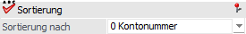
Ø Sortierung nach
Die Kontraktliste kann nach "0 - Kontonummer", "1 - Artikel" oder "2 - Kontraktnummer" (jeweils aufsteigend) sortiert werden.
Optionen
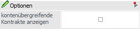
Ø kontenübergreifende Kontrakte anzeigen
Wurde diese Option aktiviert, so werden auf der Kontraktliste zusätzlich auch jene Konten angezeigt, für die der Kontrakt ebenfalls gültig ist. Hierbei werden die "von / bis"-Einstellungen der Konten ebenfalls berücksichtigt!
Hinweis
Diese Option steht nur zur Verfügung, wenn in den FAKT-Parametern (WinLine START - Parameter - Applikations-Parameter - FAKT-Parameter - Belege - Kontrakte) die Einstellung "Kontenübergreifende Kontrakte erlauben" aktiviert wurde.
Buttons
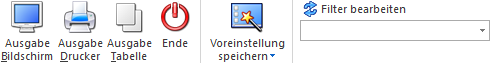
Ø Ausgabe Bildschirm
Mit Hilfe des Buttons "Ausgabe Bildschirm" oder der Taste F5 wird die Auswertung am Bildschirm ausgegeben.
Ø Ausgabe Drucker
Durch Anwahl des Buttons "Ausgabe Drucker" wird die Auswertung am Drucker ausgegeben.
Ø Ausgabe Tabelle
Bei der Anwahl des Buttons "Ausgabe Tabelle" wird die Kontraktliste in Form einer WinLine Tabelle dargestellt (nähere Informationen entnehmen Sie bitte dem Kapitel Kontraktliste Tabelle).
Ø Ende
Durch Drücken des Buttons "Ende" bzw. der Taste ESC wird das Fenster geschlossen.
Ø Voreinstellung speichern
Durch Anwahl dieses Buttons erfolgt eine benutzerspezifische Speicherung aller im Fenster getätigten Einstellungen. Diese sogenannten "Voreinstellungen" können jederzeit wieder abgerufen werden und ermöglichen dadurch ein schnelleres und zielorientierteres Arbeiten (nähere Informationen entnehmen Sie bitte dem Kapitel "Die Voreinstellungen").
Ø Filter bearbeiten
Durch Anklicken des Buttons "Filter bearbeiten" kann die Kontraktliste nach frei definierbaren Kriterien eingeschränkt werden.